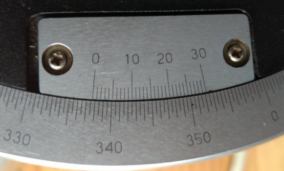
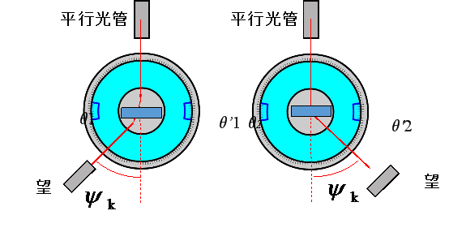

一、实验仪器：
1、(3分)分光计是一种（ ）的光学仪器
A、用来测量光波波长的光学仪器
B、用来测量各种光线之间角度的光学仪器
C、用来测量光线最小偏向角的光学仪器
2、(3分)分光计设计了两个游标是为了（ ）
A、消除偏心差，减少误差
B、消除视差，使读数准确
C、读数方便，减少误差
二、实验目的：
1、(3分) 以下哪一项不是本实验的主要实验目的（ ）
A、观察光栅衍射现象 B、测量最小偏向角 C、测量光波波长 D、测量光栅常数
三、实验原理：
1、(8分) 1.光栅方程 \(dsin\Psi=k\lambda\) 其中 \(d\) 表示 \(\Psi\) 表示 \(k\) 表示 \(\lambda\) 表示
A、暗纹级次； B、明纹级次； C、明纹个数； D、波长； E、衍射角； F、折射角； G、光栅常数
2、(3分)图中游标的示数是：（ ）
A、330°12' B、330°42' C、337°12' D、337°42'
3、(3分) 下图中衍射角\(\Psi_k\)计算公式为（ ）
A、\(\Psi_k=\frac 12(|\theta_2-\theta_1|+|\theta_2'-\theta_1'|) \)
B、\(\Psi_k=\frac 12(|\theta_1-\theta_1'|+|\theta_2-\theta_2'|) \)
C、\(\Psi_k=\frac 12(|\theta_1-\theta_2'|+|\theta_2-\theta_1'|) \)
4、(3分)\(330°02'-229°43'=\)（ ）
A、\(100°59'\) B、\(100°19'\)
C、\(100.59°\) D、\(100.19°\)
5、(3分)如果对某种光线的某次测量中， -2级谱线左游标的示数是336.19°，+2级谱线左游标的示数是12.19°，则此光线的二级衍射角大约为（ ）
A、288° B、144° C、36° D、18°
6、(3分)如果某光线的波长为500nm，实验中测得此光线的二级谱线的衍射角为30°，则光栅常数为（ ）
A、500nm B、1000nm C、2000nm
7、(3分) 用一个光栅常数为3000nm的光栅测量光波波长，实验中测得某条光线的一级谱线的衍射角为10°（sin10°≈0.17），则此光波的波长为（ ）
A、510 nm B、500 nm C、490 nm
四、实验内容及数据处理
1．记录各级衍射光线位置（转换成以度为单位，如100°45′=100.75°，填表格时只写数字即可：即100.75）
|
|
绿 K=-2 |
黄’ K=-1 |
黄K=-1 |
绿 K=-1 |
绿 K=1 |
黄K=1 |
黄’ K=1 |
绿 K=2 |
|
|
D1 |
C1 |
B1 |
A1 |
A2 |
B2 |
C2 |
D2 |
|
左游标 |
|
|
|
|
|
|
|
|
|
|
D3 |
C3 |
B3 |
A3 |
A4 |
B4 |
C4 |
D4 |
|
右游标 |
|
|
|
|
|
|
|
|
2．求衍射角
\(\Psi_{绿1}=\frac 14(|A_1-A_2|+|A_3-A_4|)\)=
\(\Psi_{绿2}=\frac 14(|D_1-D_2|+|D_3-D_4|)\)=
\(\Psi_{黄1}=\frac 14(|B_1-B_2|+|B_3-B_4|)\)=
\(\Psi_{黄1}=\frac 14(|C_1-C_2|+|C_3-C_4|)\)=
3.计算光栅常数d
已知绿光波长\(\lambda_绿=\)546.1nm
\(d_{绿1}=\frac {1×\lambda_绿}{sin\Psi绿_1}=\)nm
\(d_{绿2}=\frac {2×\lambda_绿}{sin\Psi绿_2}=\)nm
\(d=\frac {d_{绿1}+d_{绿2}}2=\)nm
相对误差（%） \(E=\frac {|d-3300|}{3300}×100=\)
4.计算黄光波长\(\lambda_{黄1}\), \(\lambda_{黄'1}\)
\(\lambda_{黄1}=\frac {dsin\Psi_k}{k}=\frac {dsin\Psi_{黄1}}{1}=\)nm
相对误差（%）\(E=\frac {|\lambda_{黄1}-577|}{577}×100=\)
\(\lambda_{黄'1}=\frac {dsin\Psi_k}{k}=\frac {dsin\Psi_{黄'1}}{1}=\)nm
相对误差（%）\(E=\frac {|\lambda_{黄1}-579.1|}{579.1}×100=\)